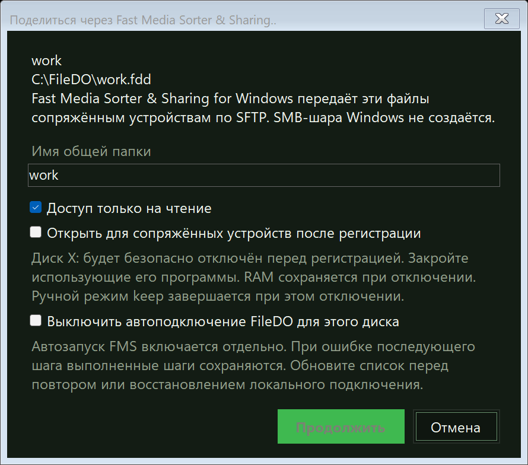
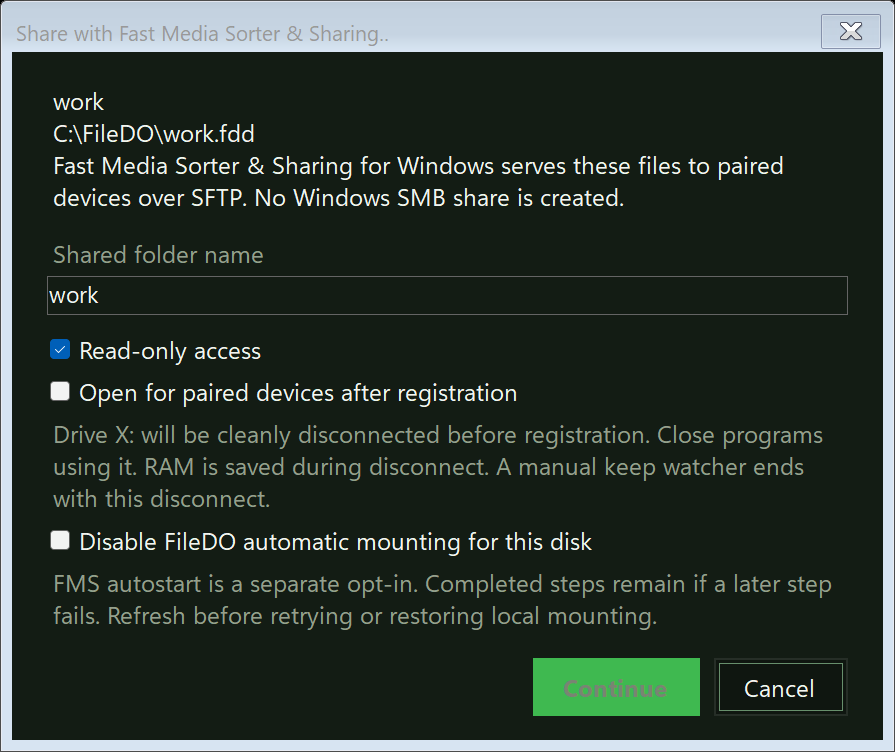
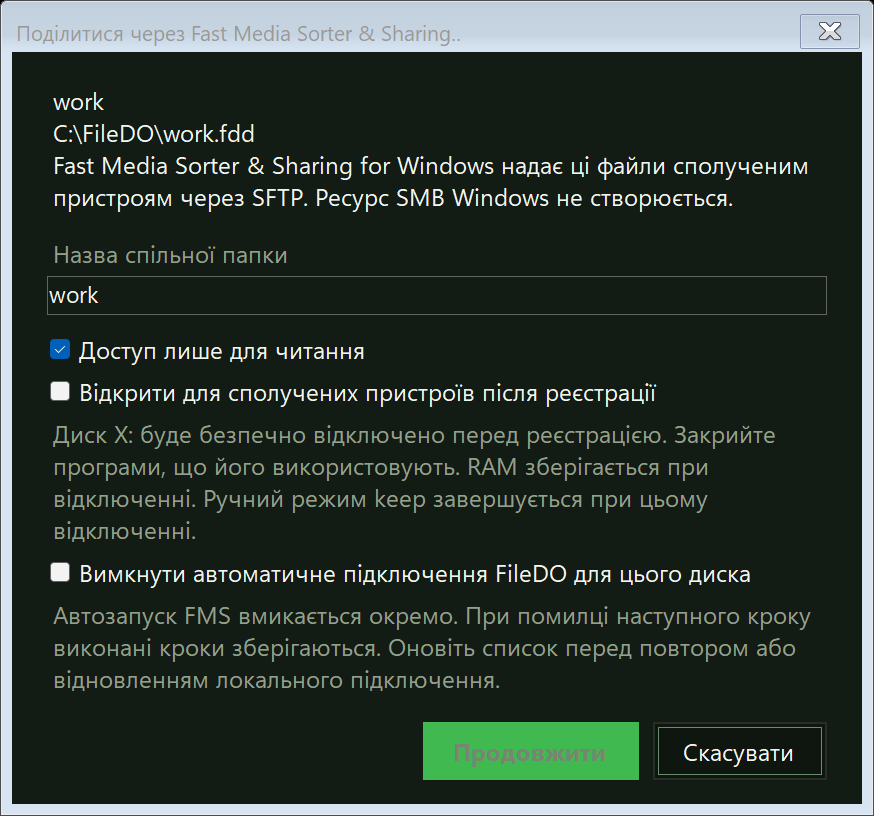

Руководство · Общий доступGuide · SharingПосібник · Спільний доступ
Диск FileDO на телефоне: общий доступ через Fast Media Sorter
& SharingA FileDO disk on the phone: sharing through Fast Media Sorter
& SharingДиск FileDO на телефоні: спільний доступ через Fast Media Sorter
& Sharing
FileDO умеет отдавать виртуальный диск .fdd
сопряжённым телефонам и планшетам - не сам, а через Fast Media
Sorter & Sharing for Windows: вы регистрируете диск в
Диспетчере дисков, а та программа открывает его файлы по SFTP
устройствам, связанным с ней. Сам FileDO не открывает для этого
сетевых соединений - он говорит с той программой по локальному
каналу на этом компьютере. Ниже - что нужно до начала, как
поделиться диском, что видят телефоны и что делать, когда диалог
сообщает, что общий доступ недоступен. О самих виртуальных дисках -
в руководстве по виртуальным
дискам.FileDO can serve a .fdd virtual disk to your paired
phones and tablets - not by itself, but through Fast Media Sorter
& Sharing for Windows: you register the disk in the Disk
Manager, and that program serves its files over SFTP to the devices
paired with it. FileDO itself opens no network connection for this -
it talks to that program over a local pipe on this computer. Below:
what you need first, how to share a disk, what the phones see, and
what to do when the dialog says sharing is unavailable. The disks
themselves are the subject of the
virtual disks guide.FileDO уміє віддавати віртуальний диск .fdd
сполученим телефонам і планшетам - не сам, а через Fast Media
Sorter & Sharing for Windows: ви реєструєте диск у Диспетчері
дисків, а та програма відкриває його файли через SFTP пристроям,
зв'язаним з нею. Сам FileDO для цього не відкриває мережевих
з'єднань - він говорить із тією програмою через локальний канал на
цьому комп'ютері. Нижче - що потрібно до початку, як поділитися
диском, що бачать телефони і що робити, коли діалог каже, що
спільний доступ недоступний. Про самі віртуальні диски - у
посібнику з віртуальних дисків.
1. Что нужно до начала1. What you need first1. Що потрібно до початку
Три вещи: FileDO настольной сборки, Fast Media Sorter &
Sharing for Windows с включённым дополнительным компонентом дисков
FileDO и хотя бы одно устройство, сопряжённое с ней.Three things: the desktop build of FileDO, Fast Media Sorter
& Sharing for Windows with its optional FileDO disk component
enabled, and at least one device paired with it.Три речі: FileDO настільної збірки, Fast Media Sorter &
Sharing for Windows з увімкненим додатковим компонентом дисків
FileDO і хоча б один пристрій, сполучений із нею.
FileDO, настольная сборкаFileDO, the desktop buildFileDO, настільна збірка
Диск должен быть зарегистрирован в Диспетчере дисков как
файловый контейнер .fdd. Сборка из Microsoft Store
не подключает диски, и этот путь в ней закрыт - используйте
настольную сборку. Как её поставить и что пишет установщик -
в руководстве по
установке.The disk must be registered in the Disk Manager as a
file-backed .fdd container. The Microsoft Store
build cannot mount disks, and this workflow is closed there -
use the desktop build. How to install it and what the installer
writes is in the
installation guide.Диск має бути зареєстрований у Диспетчері дисків як файловий
контейнер .fdd. Збірка з Microsoft Store не
підключає диски, і цей шлях у ній зачинений - використовуйте
настільну збірку. Як її поставити і що пише інсталятор - у
посібнику зі
встановлення.
Fast Media Sorter & Sharing for WindowsFast Media Sorter & Sharing for WindowsFast Media Sorter & Sharing for Windows
Программа, которая отдаёт файлы по сети. При её установке
включите дополнительный компонент дисков FileDO - без него
общий доступ к дискам недоступен. Её настольный установщик не
подписан, поэтому Windows может показать то же предупреждение,
что и о FileDO - оно разобрано
здесь. Страница установки -
serzhyale.github.io/FastMediaSorter_Lite.The program that serves the files over the network. During its
setup, enable the optional FileDO disk component - without it,
disk sharing is unavailable. Its desktop installer is unsigned,
so Windows may show the same warning it shows about FileDO -
that warning is covered here.
The installation page is
serzhyale.github.io/FastMediaSorter_Lite.Програма, яка віддає файли мережею. Під час її встановлення
увімкніть додатковий компонент дисків FileDO - без нього
спільний доступ до дисків недоступний. Її настільний інсталятор
не підписано, тому Windows може показати те саме
попередження, що й про FileDO - воно
розібране тут. Сторінка встановлення -
serzhyale.github.io/FastMediaSorter_Lite.
Телефоны и планшеты связываются с той программой в её Share
Manager - так же, как для обычных общих папок. Устройство,
которое вы не сопрягали, диск не увидит. Для телефона общий
диск выглядит как ещё одна папка, а не как отдельная
техника.Phones and tablets are paired with that program in its Share
Manager - the same way as for ordinary shared folders. A device
you have not paired will not see the disk. To the phone, a
shared disk looks like one more folder, not a separate piece of
technology.Телефони і планшети сполучаються з тією програмою в її Share
Manager - так само, як для звичайних спільних папок. Пристрій,
який ви не сполучили, диска не побачить. Для телефона спільний
диск виглядає як ще одна папка, а не як окрема техніка.
2. Поделиться диском из Диспетчера дисков2. Sharing a disk from the Disk Manager2. Поділитися диском із Диспетчера дисків
Запустите Share Manager. Общий доступ держит Fast Media
Sorter & Sharing, поэтому её Share Manager должен работать,
прежде чем FileDO предложит диск. Если worker не отвечает, FileDO
предложит повторную проверку - недоступность worker не означает,
что программы нет.Start Share Manager. Fast Media Sorter & Sharing is
the holder of a shared disk, so its Share Manager must be running
before FileDO can offer one. If its worker does not answer,
FileDO offers a recheck - an unavailable worker does not prove the
program is absent.Запустіть Share Manager. Спільний доступ тримає Fast
Media Sorter & Sharing, тому її Share Manager має працювати,
перш ніж FileDO запропонує диск. Якщо worker не відповідає,
FileDO запропонує повторну перевірку - недоступність worker не
означає, що програми немає.
Выберите диск и действие. В Диспетчере дисков выберите
зарегистрированный файловый диск и «Поделиться через
Fast Media Sorter & Sharing..» в панели сведений
или меню «Ещё» (Ctrl+Shift+S).Pick the disk and the action. In the Disk Manager, select
a registered file-backed disk and choose
Share with Fast Media Sorter & Sharing.. in
its detail pane or More menu (Ctrl+Shift+S).Виберіть диск і дію. У Диспетчері дисків виберіть
зареєстрований файловий диск і «Поділитися через Fast
Media Sorter & Sharing..» у панелі відомостей або
меню «Ще» (Ctrl+Shift+S).
Проверьте настройки регистрации. Имя общей папки видно
сопряжённым устройствам; по умолчанию доступ на чтение и запись,
«только на чтение» включается галочкой, а
sealed-диск всегда доступен только на чтение. По желанию откройте
диск сразу. Если диск подключён локально, FileDO после
подтверждения отключит его безопасно; если включено
автоподключение FileDO, согласие выключить его - обязательная
часть передачи.Check the registration choices. The folder name is what
paired devices see; access is read and write by default, you can
tick Read-only access, and a sealed
disk stays read-only. Optionally open the disk right away. If the
disk is mounted locally, FileDO disconnects it cleanly after your
confirmation; if FileDO automatic mounting is on, agreeing to
disable it is a required part of the transfer.Перевірте параметри реєстрації. Назву спільної папки
бачать сполучені пристрої; доступ типово на читання і запис,
«лише для читання» вмикається галочкою, а
sealed-диск завжди доступний лише для читання. За бажанням
відкрийте диск одразу. Якщо диск підключено локально, FileDO після
підтвердження відключить його безпечно; якщо ввімкнено
автоматичне підключення FileDO, згода вимкнути його - обов'язкова
частина передачі.
Прочитайте подтверждение. В нём собрано всё, что
произойдёт: локальное подключение выключается, файлы открытого
диска по сети отдаёт та программа. Зашифрованный диск спросит
пароль - один раз, здесь, на этом компьютере.Read the confirmation. It gathers everything that is
about to happen: local mounting switches off, and that program
serves the open disk's files over the network. An encrypted disk
asks for its password - once, here, on this computer.Прочитайте підтвердження. У ньому зібрано все, що
станеться: локальне підключення вимикається, і та програма віддає
файли відкритого диска мережею. Зашифрований диск спитає пароль -
один раз, тут, на цьому комп'ютері.
Потом закройте или прекратите. «Закрыть общий диск»
сохраняет регистрацию - диск можно открыть снова в один шаг.
«Прекратить шаринг» удаляет регистрацию и сохранённый ключ
автозапуска FMS.Later, close or stop.Close shared disk
keeps the registration - the disk can be opened again in one
step. Stop sharing removes the registration and
the saved FMS autostart key.Потім закрийте або припиніть. «Закрити спільний диск»
зберігає реєстрацію - диск можна відкрити знову за один крок.
«Припинити спільний доступ» видаляє реєстрацію та збережений
ключ автозапуску FMS.



Регистрация диска в Диспетчере дисков. Пароль зашифрованного
диска вводится на этом компьютере и никогда не уходит на
телефон.Registering a disk in the Disk Manager. An encrypted disk's
password is typed on this computer and never travels to the
phone.Реєстрація диска в Диспетчері дисків. Пароль зашифрованого диска
вводиться на цьому комп'ютері і ніколи не йде на
телефон.
Автозапуск - отдельное согласие для каждого диска: программа
откроет общий зашифрованный диск после перезапуска сама, без ввода
пароля, и для этого один раз спросит его и объяснит, что
меняется. Из командной строки те же шаги делает
vd share - раздел 3.Autostart is a separate opt-in per disk: after a restart, the
program opens the shared encrypted disk on its own, without anyone
typing the password, and for that it asks for the password once and
explains what changes. From the command line, the same steps are
done by vd share - section 3.Автозапуск - окрема згода для кожного диска: після перезапуску
програма відкриє спільний зашифрований диск сама, без введення
пароля, і для цього один раз спитає його і пояснить, що
змінюється. З командного рядка ті самі кроки робить
vd share - розділ 3.
3. То же самое из командной строки3. The same from the command line3. Те саме з командного рядка
vd share work.fdd on регистрирует диск,
vd share work.fdd off прекращает доступ,
vd open и vd close открывают и закрывают
его для устройств, vd autostart включает и выключает
автозапуск, а vd status говорит, кто держит диск.
Пароль зашифрованного диска передаётся через стандартный ввод или
переменную окружения - никогда аргументом командной строки.
Подключённый кем-то другим диск mount отклонит: у
контейнера один владелец одновременно.vd share work.fdd on registers the disk,
vd share work.fdd off stops sharing, vd open
and vd close open and close it for the devices,
vd autostart turns autostart on and off, and
vd status says who holds the disk. An encrypted disk's
password travels over standard input or an environment variable -
never as a command-line argument. A disk someone else holds is
refused by mount: a container has one holder at a
time.vd share work.fdd on реєструє диск,
vd share work.fdd off припиняє доступ,
vd open і vd close відкривають і
закривають його для пристроїв, vd autostart вмикає і
вимикає автозапуск, а vd status каже, хто тримає
диск. Пароль зашифрованого диска передається через стандартний
ввід або змінну оточення - ніколи аргументом командного рядка.
Диск, який тримає хтось інший, mount відхилить: у
контейнера один власник одночасно.
4. Что видят сопряжённые устройства4. What paired devices see4. Що бачать сполучені пристрої
Общий диск выглядит для телефона как ещё одна общая папка той
программы: файлы передаются по SFTP, и Windows SMB-шара при этом не
создаётся. Пока диск открыт, каждое сопряжённое устройство может
читать его файлы - даже если контейнер зашифрован, ведь он
разблокируется здесь, на компьютере, и никогда с телефона. По
умолчанию доступ на чтение и запись; «только на чтение» - галочка
при регистрации. Закрытие диска или выключение компьютера прекращает
доступ. Сеансовый режим требует, чтобы вы вошли в систему;
серверная редакция держит общие диски доступными и без входа.To the phone, a shared disk looks like one more shared folder of
that program: the files travel over SFTP, and no Windows SMB share
is created. While the disk is open, every paired device can read
its files - even when the container is encrypted, because it is
unlocked here, on the computer, never from the phone. Access is
read and write by default; read-only is a checkbox at
registration. Closing the disk, or shutting the computer down,
ends the access. The session mode requires you to be signed in;
the Server edition keeps shared disks available with nobody signed
in.Для телефона спільний диск виглядає як ще одна спільна папка тієї
програми: файли передаються через SFTP, і спільний ресурс SMB
Windows при цьому не створюється. Поки диск відкритий, кожен
сполучений пристрій може читати його файли - навіть коли контейнер
зашифрований, адже він розблоковується тут, на комп'ютері, і
ніколи з телефона. Типово доступ на читання і запис; «лише для читання» -
галочка під час реєстрації. Закриття диска або вимкнення комп'ютера
припиняє доступ. Сеансовий режим потребує, щоб ви ввійшли в
систему; серверна редакція тримає спільні диски доступними і без
входу.
5. Когда общий доступ недоступен5. When sharing is unavailable5. Коли спільний доступ недоступний
Каждое из этих сообщений оставляет диск нетронутым: ничего не
подключено и не изменено. Сообщение называет причину, а не
приговор - ниже действие для каждой.Each of these messages leaves the disk untouched: nothing is
mounted and nothing is changed. The message names a cause, not a
verdict - the action for each is below.Кожне з цих повідомлень залишає диск неторканим: нічого не
підключено і не змінено. Повідомлення називає причину, а не
вирок - нижче дія для кожної.
«FMS работает, но шаринг дисков недоступен»“FMS is running but disk sharing is unavailable”«FMS працює, але спільний доступ до дисків недоступний»
Обновите Fast Media Sorter & Sharing и проверьте
дополнительный компонент дисков FileDO в её установщике - без
него программа не умеет держать диски. Затем повторите
проверку в Диспетчере дисков.Update Fast Media Sorter & Sharing and check its
installer's optional FileDO disk component - without it, the
program cannot hold disks. Then recheck in the Disk
Manager.Оновіть Fast Media Sorter & Sharing і перевірте додатковий
компонент дисків FileDO в її інсталяторі - без нього програма
не вміє тримати диски. Потім повторіть перевірку в Диспетчері
дисків.
«Worker FMS недоступен»“The FMS worker is unavailable”«Worker FMS недоступний»
FileDO не отличает отсутствующую программу от остановленной.
Откройте Fast Media Sorter & Sharing и её Share Manager
вручную, затем повторите проверку. Если программы нет - откройте
страницу установки.FileDO cannot tell an absent program from a stopped one. Open
Fast Media Sorter & Sharing and its Share Manager manually,
then recheck. If the program is not installed, open the
installation page.FileDO не відрізняє відсутню програму від зупиненої. Відкрийте
Fast Media Sorter & Sharing і її Share Manager вручну,
потім повторіть перевірку. Якщо програми немає - відкрийте
сторінку встановлення.
«Подлинность worker не подтверждена»“The worker identity could not be verified”«Автентичність worker не підтверджена»
Пароль при этом не отправлялся. Перезапустите установленный
хост FMS и повторите попытку.No password was sent. Restart the installed FMS host and
retry.Пароль при цьому не надсилався. Перезапустіть установлений
хост FMS і повторіть спробу.
«Ответ FMS неполон или несовместим»“The FMS reply is incomplete or incompatible”«Відповідь FMS неповна або несумісна»
Версии двух программ разошлись. Обновите обе - FileDO и Fast
Media Sorter & Sharing - и повторите попытку.The two programs' versions have drifted apart. Update both -
FileDO and Fast Media Sorter & Sharing - and retry.Версії двох програм розійшлися. Оновіть обидві - FileDO і
Fast Media Sorter & Sharing - і повторіть спробу.
Если шаг из нескольких упал на середине, выполненное сохраняется:
обновите список дисков, повторите оставшееся действие или
прекратите общий доступ - и только после этого явно возвращайте
локальное подключение и прежнюю автоматическую политику. Не
восстанавливайте локальное подключение, пока неизвестно, кто
держит диск.If a step in a sequence fails halfway, what completed remains:
refresh the disk list, retry the remaining action, or stop sharing
- and only then explicitly restore local mounting and its prior
automatic policy. Do not restore local mounting while the holder of
the disk is unknown.Якщо крок із кількох упав посередині, виконане зберігається:
оновіть список дисків, повторіть решту дій або припиніть спільний
доступ - і лише після цього явно повертайте локальне підключення
та попередню автоматичну політику. Не відновлюйте локальне
підключення, поки невідомо, хто тримає диск.
6. Что хранится и что защищено6. What is stored and what is protected6. Що зберігається і що захищено
Пароль никогда не уходит с компьютера. Зашифрованный
диск разблокируется здесь и только здесь; сопряжённое устройство
получает файлы, а не пароль. Пароль не пишется ни в какой список
и не появляется в командной строке.The password never leaves the computer. An encrypted disk
is unlocked here and only here; a paired device receives files,
not the password. The password is written to no list and never
appears on a command line.Пароль ніколи не йде з комп'ютера. Зашифрований диск
розблоковується тут і лише тут; сполучений пристрій отримує
файли, а не пароль. Пароль не пишеться ні в який список і не
з'являється в командному рядку.
Ключ автозапуска - отдельное согласие. Он хранится на
этом компьютере, защищённым для той программы, и удаляется, когда
вы выключаете автозапуск, прекращаете доступ или меняете пароль
диска.The autostart key is a separate consent. It is kept on
this computer, protected for that program, and removed when you
turn autostart off, stop sharing, or change the disk's
password.Ключ автозапуску - окрема згода. Він зберігається на цьому
комп'ютері, захищеним для тієї програми, і видаляється, коли ви
вимикаєте автозапуск, припиняєте доступ або змінюєте пароль
диска.
Список общих дисков без секретов. FileDO записывает в
свою папку состояния путь контейнера, имя папки и отметки
«только чтение» и «автозапуск». Пароль сюда никогда не
пишется.The list of shared disks carries no secrets. FileDO writes
the container's path, the folder name, and the read-only and
autostart marks to its state folder. A password is never written
there.Список спільних дисків без секретів. FileDO записує до
своєї теки стану шлях контейнера, назву папки й позначки «лише
читання» й «автозапуск». Пароль сюди ніколи не пишеться.